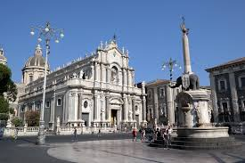
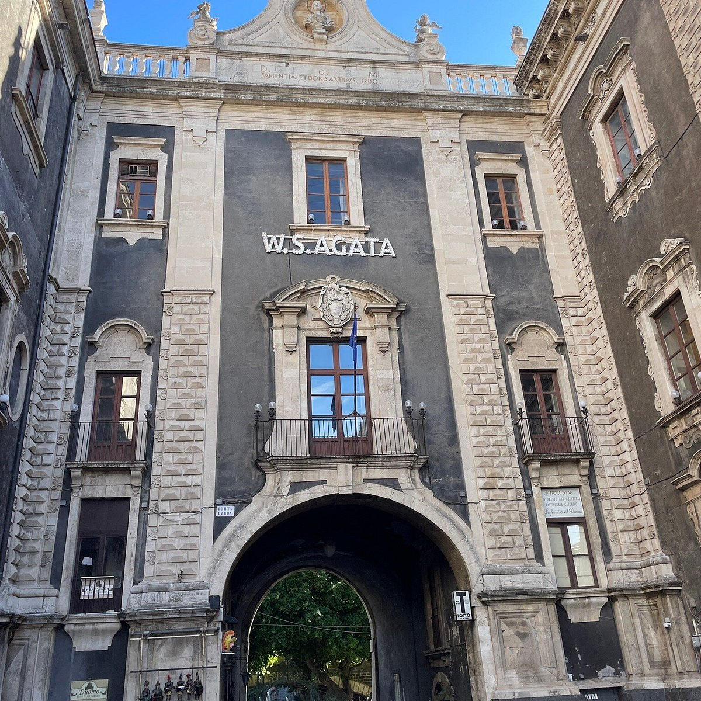

Catania: Piazza del Duomo Vero trionfo del barocco siciliano in pietra lavica e marmo, la piazza attuale è figlia della ricostruzione seguita al catastrofico terremoto del 1693. Progettata dall'architetto Gian Battista Vaccarini, ospita al centro la Fontana dell'Elefante, un monumento che fonde elementi di epoche diverse: un basamento barocco, una statua antica in basalto e un obelisco egizio. Questo spazio incarna la resilienza della città, capace di rinascere dalle proprie ceneri laviche per trasformarsi in un salotto aristocratico di straordinaria coerenza stilistica.

Catania (Piazza del Duomo)

L'Elefante "Liotru": Osserva l'antico pachidarma in pietra lavica sul cui dorso
poggia un obelisco egizio; è il talismano magico e protettivo della città.

La Fontana dell'Amenano: All'angolo della piazza, guarda l'acqua che cade
"a lenzuolo" nel fiume sotterraneo omonimo, che scorre proprio sotto i tuoi piedi.

La Porta Uzeda: Il monumentale varco settecentesco in pietra lavica e bianca che
collega la piazza alla zona del porto, fungendo da imponente cornice d'ingresso al
salotto cittadino.